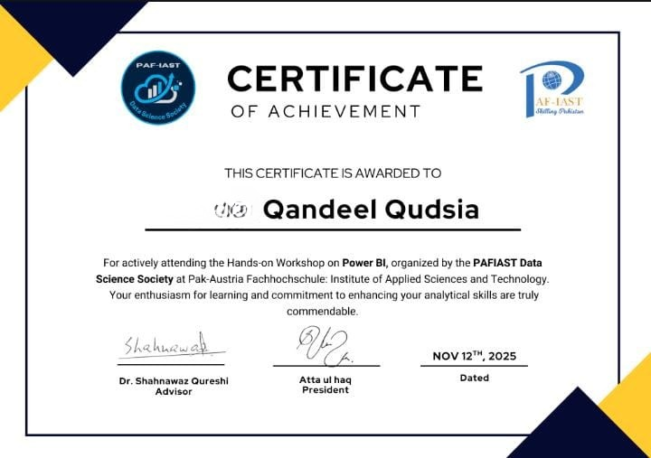
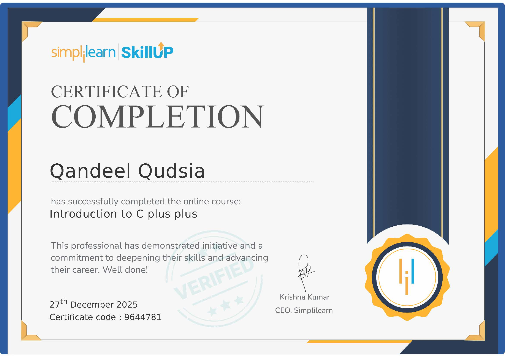
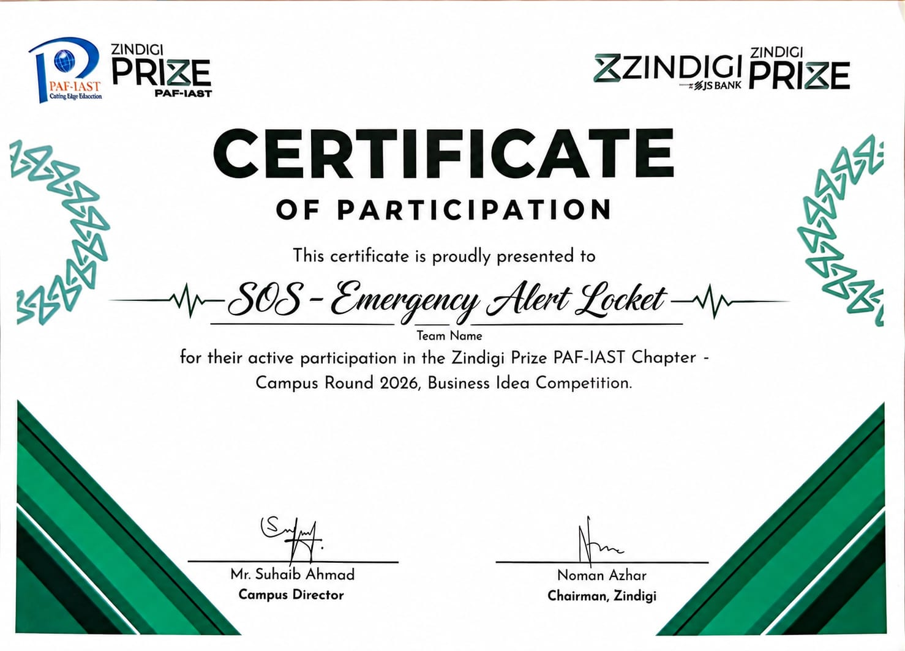
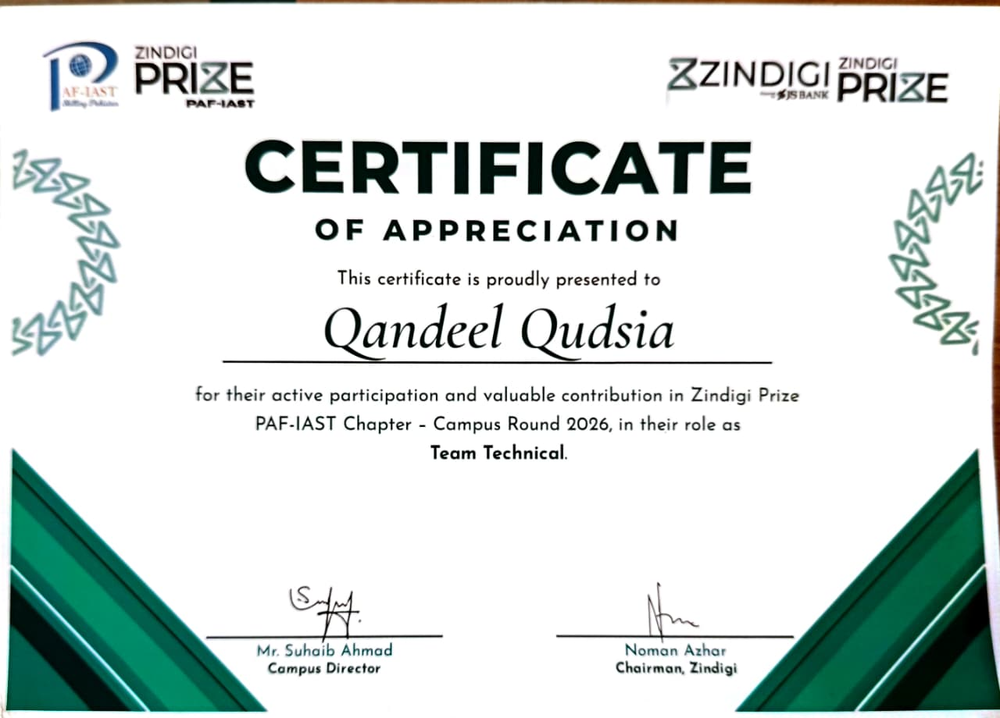

CERTIFICATE / 01
Power BI Hands-on Workshop
PAF-IAST Data Science Society, November 2025.
01 / The introduction
I'm Qandeel — a Data Science student, curious learner, and someone who enjoys turning ideas into something tangible.
My interest in technology goes beyond writing code or creating dashboards. I'm fascinated by how things work, how information connects, and how seemingly complicated problems can be broken down into smaller, understandable pieces.
Currently pursuing a Bachelor's degree in Data Science at PAF-IAST, I'm exploring the intersection of programming, analytics, artificial intelligence, and technology.
I'm still learning, experimenting, making mistakes, and building things along the way. And honestly, that's my favourite part of the journey.
02 / Education
2025 – Present
PAF-IAST · Haripur, Pakistan
Through coursework and practical assignments, I'm developing an understanding of programming, data analysis, statistics, algorithms, and artificial intelligence. I'm particularly interested in how theoretical concepts translate into practical solutions.
Previously
KIPS College · FBISE
Computer Science major.
Previously
WISE School & College · FBISE
Computer Science major.

CERTIFICATE / 01
PAF-IAST Data Science Society, November 2025.

CERTIFICATE / 02
Simplilearn SkillUp, December 2025.

CERTIFICATE / 03
Issuer, Month Year.

CERTIFICATE / 04
Issuer, Month Year.
03 / Experience
Some of my most valuable learning experiences have come from working with people, taking responsibility, and stepping into unfamiliar roles. Tap a card to open it.
Sir Syed School, Wah Cantt · Oct 2024 – Present
Teaching gave me an opportunity to develop communication skills, explain concepts in simpler ways, and understand how different people approach learning. It also taught me that knowing something and being able to explain it clearly are two very different skills.
What I gained: communication, patience, adaptability, responsibility.
AI Society, PAF-IAST
An opportunity to engage with the AI community at university, collaborate with others, and take part in activities around artificial intelligence and technology.
What I'm developing: team coordination, collaboration, technical communication.
Data Science Society, PAF-IAST
Working around media and communication within a student society lets me contribute beyond technical coursework. It brings together creativity, coordination, and communicating ideas effectively.
What I'm developing: communication, creative thinking, organizational skills.
Job Fest
Being part of an event team introduced me to the practical side of coordination, teamwork, and managing responsibilities in a busy environment.
What I gained: teamwork, organization, adaptability.
04 / My toolkit
I'm building my technical foundation one skill at a time. Tap a tool to see how I've used it.
Tap a tool to see how I've used it.
Tap a tool to see how I've used it.
Tap a tool to see how I've used it.
My focus isn't on collecting technologies. It's on understanding how to use them to solve problems and build useful things.
05 / Beyond the technical side
I'm interested in the way people think, how ideas develop, and why we make the decisions we do. I also enjoy experimenting with design and finding creative ways to present information. I think this combination of analytical and creative interests influences the way I approach my work.
06 / The direction I'm heading
I'm at the beginning of my professional journey, and I see that as an opportunity. There's so much more to explore — from developing stronger programming foundations to working on real-world data problems and learning how technology is used at scale.
My goal is to keep building meaningful projects, learn from practical experiences, and eventually contribute to challenging work in the technology industry. I don't have everything figured out yet. But I know I want to keep learning, keep experimenting, and keep creating.